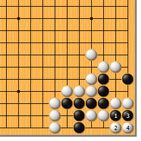
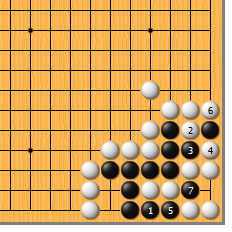
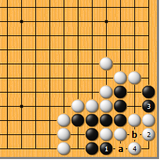

|  |  | |
| 图1 黑1断，正解。不解决这里的问题，白无法渡过。白2如打，黑3长，让白4提……
| 图2 黑1拐，要点。局部白既然无法将黑做成死形，只好考虑2位的渡过。黑3冲，白4断，黑5打吃，让白6提，再于7位提，吃白的尾巴。让白渡过而确保吃子做活，这是基本的思路。
| |
|  | 您的高见 | |
| 图3 黑1如果单拐，白就下2位占据急所。黑再于3位阻渡，为时已晚，白4做眼，局部虽然不活，但必将做成“花六”死形。黑a卡后b位提，白可“打二还一”，这一点不难看到。黑1如先下3位阻渡，白4位尖，结果不变。 |